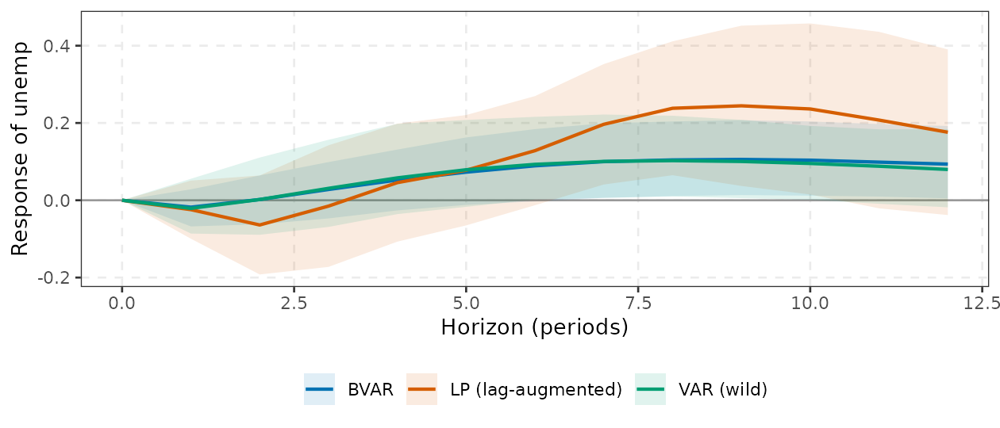

Choosing a method, and where varm sits in the VAR ecosystem
Source:vignettes/choosing-a-method.Rmd
choosing-a-method.RmdThis vignette is a decision guide. It maps what you want to
learn to which estimator and then to the varm
function, and places varm among the other R (and non-R)
tools for VARs and local projections, using the curated list awesome-var. The
detailed theory is in vignette("var-theory"),
vignette("identification"),
vignette("bayesian-var") and
vignette("local-projections").
1. Decision tables
1.1 By situation
| Your situation | Recommended |
varm call |
Why |
|---|---|---|---|
| Small system (), moderate lags, long sample, structural IRFs | OLS VAR + bootstrap (wild if volatility changes) |
varm(), irf(ci = "wild")
|
simple, efficient, transparent |
| Small system, short sample or persistent data in levels | BVAR with Minnesota + unit-root priors |
bvarm() (default prior) |
shrinkage removes the downward bias in persistence and stabilises forecasts |
| Many variables or many lags (, or large relative to ) | BVAR; sparse/shrinkage priors | bvarm(prior = prior_triangular("ssvs"/"horseshoe")) |
OLS is infeasible or noisy; cost is linear in per sweep |
| Time-varying volatility (Great Moderation, 2008, 2020) | BVAR with stochastic volatility | bvarm(prior = prior_triangular(), sv = TRUE) |
correct predictive densities and shock scaling |
| Drifting coefficients and volatility | TVP-VAR-SV |
tvpvar(), irf(),
irf_path()
|
local (frozen-parameter) IRFs at each date; sensitive to the prior |
| Short horizon (up to about a year) | VAR or BVAR | irf() |
efficient |
| Long horizon (many years), possibly misspecified dynamics | LP, lag-augmented | lp(lag_augment = TRUE) |
no extrapolation of short-run dynamics; inference valid without stationarity |
| A noisy LP path and you want a smooth one | smooth LP | lp_smooth() |
pools horizons, MSE about two thirds of raw LP in simulation; bands optimistic |
| Nonlinearity, state dependence (recession vs expansion) | state-dependent LP | lp_state() |
each horizon is a regression; calibrated transition |
| Many units (countries, states, firms) | panel LP | lp_panel() |
fixed effects, clustered errors |
| Claim about the whole response path | joint covariance and sup-t bands |
lp_joint(), lp_supt()
|
pointwise bands do not support path-wide claims; finite-sample coverage is below nominal |
| Recursive timing assumption is credible | Cholesky | id_chol(order) |
exactly identified, no extra data |
| Theory on long-run neutrality | Blanchard-Quah | id_longrun() |
needs stationary (differenced) data; near-integrated data are a problem |
| A mix of zero restrictions (short or long run) | zero-restriction or ARRW-style identification | id_restrictions() |
exact zeros, closed form, no optimiser |
| Only qualitative theory (signs) | Sign restrictions; report the identified set and Fry-Pagan |
id_sign(), irf_fry_pagan()
|
set identification; the prior over rotations matters |
| Signs plus a few zeros | zero and sign restrictions | id_zerosign() |
unweighted in varm (see section 6) |
| Two volatility regimes, no economic restrictions | identification through heteroskedasticity | id_hetero() |
statistical shocks that must be labelled; a point estimate without sampling uncertainty |
| An external instrument for one shock | Proxy-SVAR or LP-IV |
varm_proxy(), id_proxy(),
lp(iv = )
|
needs a strong, exogenous instrument; check
proxy_fstat()
|
| Weak instrument worry | AR-type confidence sets | varm_proxy_robust() |
Montiel Olea-Stock-Watson (2021) |
| Unconditional and density forecasts | BVAR (best), VAR | forecast() |
uncertainty combines parameters and shocks |
| Direct multi-step forecasts, long sample, doubtful dynamics | LP forecast | lp_forecast() |
robust to misspecification, noisier |
| Variance and historical decomposition | VAR/BVAR |
fevd(), hd()
|
LP does not give FEVD or HD directly |
| A tidy, plot-ready result for any estimator | every result class |
tidy(), glance(),
autoplot()
|
every result has tidy() (a tibble:
horizon, response, estimate,
std.error, conf.low, conf.high,
…) and autoplot() (a ggplot you extend with
+); glance() gives a one-row summary |
A rule that cuts across rows: report more than one. Compare VAR and LP, Cholesky orderings, Minnesota tightness: the disagreement between reasonable choices is itself a measure of what the data say.
1.2 By the questions you can answer
Walk through these in order. The first is usually decisive.
| Question | If the answer is… | Then |
|---|---|---|
| 1. What is the goal? | forecasting | BVAR/VAR; lp_forecast() only at long horizons with long
samples |
| a causal effect of a shock | continue with the questions below | |
| 2. System size (, lags ) | small against | OLS VAR |
| comparable to , or | BVAR with shrinkage (SSVS/horseshoe for sparsity) | |
| 3. Horizon | up to about 4 years of quarterly data | VAR/BVAR |
| beyond, or a doubtful lag order | LP (lag-augmented), VAR as a check | |
| 4. Nonlinearity | the effect depends on a state | lp_state() |
| the effect drifts over time | tvpvar() |
|
| none | linear methods | |
| 5. Identification | recursive timing | id_chol() |
| long-run neutrality | id_longrun() |
|
| sign (plus zeros) |
id_sign()/id_zerosign() with
Fry-Pagan |
|
| external instrument |
varm_proxy() or lp(iv = )
|
|
| volatility regimes | id_hetero() |
|
| 6. Sample size | quarterly observations | prefer BVAR; do not trust long-horizon LP bands |
| large, panels available | LP and panel LP are comfortable |
1.3 A decision flow
Goal?
|-- forecasting
| |-- few variables, short lags, long sample ---> varm() / var_select()
| |-- otherwise ----------------------------------> bvarm() [+ sv = TRUE if volatility moves]
| |-- long horizon, long sample, doubtful VAR ---> lp_forecast()
|-- structural (causal) effect of a shock
|-- identification available?
| |-- recursive timing ---------------------> id_chol()
| |-- long-run neutrality ------------------> id_longrun()
| |-- signs (+ zeros) ----------------------> id_sign() / id_zerosign() (report the set; Fry-Pagan)
| |-- external instrument ------------------> varm_proxy() / lp(iv = )
| |-- two volatility regimes ---------------> id_hetero()
|-- nonlinear or state-dependent? --------------> lp_state() / tvpvar()
|-- panel of units? ----------------------------> lp_panel()
|-- how many variables / how persistent / how long a horizon?
|-- small, short horizon -----------------> VAR + wild bootstrap
|-- persistent or short sample -----------> BVAR with unit-root priors
|-- long horizon or doubtful lag order ---> LP with lag augmentation (and the VAR as a check)
|-- whole-path statement -----------------> lp_joint() + lp_supt(), lag_augment = TRUE1.4 Every function in varm
| Function | What it does | Use it when |
|---|---|---|
varm() |
OLS/ML reduced-form VAR | baseline estimate; input to bootstrap and proxy methods |
var_select() |
AIC, HQ, SC, FPE lag selection | choosing (check residuals; consider a BVAR instead) |
stability() |
eigenvalue moduli of the companion matrix | checking for explosive or near-unit roots |
lag_matrices() |
extract the lag coefficient matrices | custom calculations |
draws() |
bootstrap, wild, or asymptotic draws of | one currency for uncertainty |
irf(), fevd(), hd(),
forecast()
|
responses, variance and historical decompositions, forecasts |
varm and bvarm fits (tvpvar
supports irf, fevd, forecast, not
hd) |
id_chol(), id_longrun(),
id_sign(), id_given()
|
core identification schemes | recursive, long-run, sign, user-supplied |
id_restrictions(), id_zerosign(),
id_hetero(), id_proxy()
|
zero patterns, zero+sign, heteroskedasticity, instrument | richer identification |
irf_fry_pagan() |
one coherent draw from a set-identified IRF | after id_sign()/id_zerosign()
|
varm_proxy(), proxy_draws(),
proxy_fstat(), varm_proxy_robust(),
varm_proxy_bayes()
|
proxy-SVAR estimation, bootstrap, strength, robust sets, Bayesian version | external instruments |
bvarm(), prior_minnesota(),
prior_triangular()
|
Bayesian VAR (conjugate, hierarchical, triangular, SV, SSVS, horseshoe) | short samples, large , volatility |
volatility(), mcmc_diagnostics()
|
posterior volatility paths; ESS, R-hat, Geweke | after bvarm(sv = TRUE) or any sampler |
tvpvar(), tvp_prior(),
tvp_volatility(), irf_path()
|
TVP-VAR-SV, its prior, volatility paths, IRFs through time | drifting parameters |
tidy(), glance(), augment(),
autoplot()
|
tibbles and ggplot2 graphics for every result (varm,
irf, fevd, hd,
forecast, bvarm, tvpvar,
lp_*) |
any plot or table; as.data.frame(tidy(x)) for base
R |
theme_varm(), varm_palette()
|
the package ggplot2 theme and colour-blind-safe palette | your own plots in the same style |
normalise_to() |
unit-impact normalisation for irf()
|
comparing with an LP
(irf(normalise = normalise_to("rate", "rate", 1))) |
lp() |
LP, LP-IV, lag augmentation, cumulative (variables named with tidyselect) | linear LP; robustness check on a VAR |
lp_joint(), lp_supt()
|
cross-horizon covariance; sup-t bands | whole-path claims |
lp_state() |
state-dependent LP | regime-dependent responses |
lp_smooth() |
penalised B-spline LP | smooth point estimates |
lp_panel() |
panel LP with fixed effects, clustering | panels |
lp_forecast() |
direct multi-step forecasts | long-horizon forecasts |
compare_lp_var() |
LP versus Cholesky VAR, same lags and ordering; a tibble with
horizon, lp, lp_se,
var, diff, z
|
diagnosing VAR misspecification |
2. A recommended workflow on yraw
sel <- var_select(y, pmax = 8)$selection
sel
#> AIC HQ SC FPE
#> 6 2 2 6
fit <- varm(y, p = 2) # parsimonious lag choice (SC/HQ)
round(max(stability(fit)), 3) # closeness of the largest root to one
#> [1] 0.946
nm <- normalise_to("rate", "rate", size = 1)
ir_var <- irf(fit, horizon = 12, ci = "wild", nboot = 300, normalise = nm)
ir_bvar <- irf(bvarm(y, p = 2, ndraw = 1000, nburn = 500), horizon = 12, normalise = nm)
ir_lp <- lp(yraw, rate, horizon = 12, lags = 2, contemp = c(infl, unemp), lag_augment = TRUE)
# three estimates of the response of unemployment to a 1-point policy-rate shock
round(rbind(VAR = ir_var$estimate["unemp", "rate", c(1, 5, 9, 13)],
BVAR = ir_bvar$estimate["unemp", "rate", c(1, 5, 9, 13)],
LP = ir_lp$estimate[c(1, 5, 9, 13), "unemp"]), 3)
#> 0 4 8 12
#> VAR 0 0.058 0.103 0.080
#> BVAR 0 0.052 0.104 0.094
#> LP 0 0.046 0.238 0.176If the three agree you can report any; here the LP differs at long
horizons, as expected (vignette("local-projections")).
Because every result has tidy(), putting the three on
one ggplot2 figure is a few lines (here the 90% bands of the
unemployment response):
pick <- function(x, nm) {
d <- tidy(x)
d <- if ("shock" %in% names(d)) subset(d, shock == "rate" & response == "unemp") else subset(d, response == "unemp")
cbind(method = nm, subset(d, level == 0.9, select = c(horizon, estimate, conf.low, conf.high)))
}
three <- rbind(pick(ir_var, "VAR (wild)"), pick(ir_bvar, "BVAR"), pick(ir_lp, "LP (lag-augmented)"))
ggplot(three, aes(horizon, estimate, colour = method, fill = method)) +
geom_hline(yintercept = 0, colour = "grey60") +
geom_ribbon(aes(ymin = conf.low, ymax = conf.high), alpha = 0.12, colour = NA) +
geom_line(linewidth = 0.8) +
scale_colour_manual(values = varm_palette(3), name = NULL) +
scale_fill_manual(values = varm_palette(3), name = NULL) +
labs(x = "Horizon (periods)", y = "Response of unemp") +
theme_varm()
Forecasting: does shrinkage pay?
A pseudo out-of-sample check (expanding window, origins 1990Q2-2005Q3, up to 61 forecasts per horizon) comparing a random walk, OLS VARs with 2 and 6 lags and a BVAR with 6 lags (posterior-mean forecast):
orig <- 150:210; H <- 4
err <- array(NA_real_, c(length(orig), 4, 3, H), dimnames = list(NULL, c("RW", "VAR(2)", "VAR(6)", "BVAR(6)"), colnames(y), paste0("h", 1:H)))
for (i in seq_along(orig)) {
Tn <- orig[i]; hh <- min(H, nrow(y) - Tn); if (hh < 1) next
Yt <- y[1:Tn, ]; act <- y[Tn + seq_len(hh), , drop = FALSE]
fc <- list(matrix(rep(Yt[Tn, ], each = hh), hh),
forecast(varm(Yt, 2), h = hh, ci = "none")$mean,
forecast(varm(Yt, 6), h = hh, ci = "none")$mean,
forecast(bvarm(Yt, 6, ndraw = 200, nburn = 200), h = hh)$mean)
for (m in 1:4) err[i, m, , seq_len(hh)] <- t(fc[[m]] - act)
}
rmse <- apply(err^2, c(2, 3, 4), function(z) sqrt(mean(z, na.rm = TRUE)))
round(rmse[, , "h1"], 3)
#> infl unemp rate
#> RW 0.209 0.228 0.474
#> VAR(2) 0.207 0.207 0.457
#> VAR(6) 0.185 0.209 0.476
#> BVAR(6) 0.197 0.206 0.471
round(rmse[, , "h4"], 3)
#> infl unemp rate
#> RW 0.551 0.662 1.469
#> VAR(2) 0.629 0.606 1.280
#> VAR(6) 0.606 0.642 1.231
#> BVAR(6) 0.577 0.611 1.252The gains are modest and not uniform (a handful of overlapping origins cannot support formal tests): the BVAR with six lags beats the OLS VAR(6) at four quarters ahead for inflation and unemployment, is mixed at one quarter ahead, and is roughly tied for the interest rate, while the random walk is hard to beat at one quarter ahead. Compare density forecasts and use longer evaluation samples before drawing conclusions.
3. Cross-checks against other packages
varm is validated by agreement with established
implementations. The reduced-form VAR coincides with vars
to machine precision, including information criteria:
v <- vars::VAR(y, p = 2, type = "const")
cb <- sapply(1:3, function(k) coef(v)[[k]][, 1])
max(abs(cb[1:6, ] - coef(fit)[1:6, ])) # slope coefficients
#> [1] 3.936296e-13
max(abs(vars::VARselect(y, lag.max = 8)$criteria[1:3, ] - t(var_select(y, 8)$criteria)[1:3, ])) # AIC, HQ, SC
#> [1] 5.329071e-15
iv <- vars::irf(v, impulse = "rate", response = "infl", n.ahead = 8, ortho = TRUE, boot = FALSE)
a <- irf(fit, horizon = 8, ci = "none")
max(abs(iv$irf$rate[, 1] - a$estimate["infl", "rate", ])) # orthogonalised IRF, same Cholesky ordering
#> [1] 3.42365e-14For local projections the comparison with lpirfs is
close but not identical:
r <- lpirfs::lp_lin(as.data.frame(y), lags_endog_lin = 2, trend = 0, shock_type = 1, confint = 1.65,
hor = 8, use_nw = TRUE)
l8 <- lp(yraw, rate, horizon = 8, lags = 2, contemp = c(infl, unemp))
round(rbind(lpirfs = r$irf_lin_mean[1, , 3], varm = l8$estimate[, "infl"]), 3)
#> 0 1 2 3 4 5 6 7 8
#> lpirfs 0 -0.057 -0.062 -0.045 -0.035 -0.025 -0.037 -0.071 -0.104
#> varm 0 -0.059 -0.062 -0.032 -0.022 -0.008 -0.015 -0.043 -0.075The two use the same recursive logic; the differences (up to about
0.03 at long horizons) come from sample alignment and the specification
of contemporaneous controls, and we have not reconciled
them exactly. The state-dependent LP, by contrast, matches
lpirfs::lp_nl() closely under its own timing convention
(vignette("lp-advanced")). For the Bayesian VAR, the
comparison with BVAR is in
vignette("bayesian-var"): with the same inverse-Wishart
scale the hyperparameter posteriors and IRFs agree to Monte Carlo
error.
Validation summary
Numbers below come from the package’s validation scripts
(validation/ in the source tree), not from code run when
this vignette is built. Speed figures are wall-clock seconds on the
developer’s machine and will differ on yours; use them for relative
orders of magnitude.
| Check | Reference | Agreement |
|---|---|---|
| Reduced-form VAR coefficients, information criteria, orthogonalised IRFs | vars |
about |
| BVAR log posterior (hierarchical Minnesota) | BVAR |
about when is matched |
| LP point estimates and HAC/HC standard errors |
lm + sandwich
|
about |
State-dependent LP (timing = "lagged") |
lpirfs::lp_nl |
about |
| Linear LP | lpirfs::lp_lin |
close but not identical: up to about 0.03 at long horizons |
Speed per 1000 posterior draws (seconds, , Apple M4 Pro):
| Sampler | |||
|---|---|---|---|
| conjugate, fixed hyperparameters | 0.003 | 0.010 | 0.061 |
| hierarchical (GLP) | 0.054 | 0.177 | 1.271 |
| triangular | 0.019 | 0.110 | 1.312 |
| triangular + stochastic volatility | 0.112 | 0.382 | 2.979 |
BVAR::bvar (reference) |
0.157 | 0.259 | 0.899 |
The conjugate sampler with fixed hyperparameters (direct draws) is
the fastest by an order of magnitude or more. BVAR::bvar is
faster than the hierarchical sampler at
(0.90 s against 1.27 s); varm is faster at
and
.
The comparison is not like-for-like: the varm hierarchical
sampler draws three hyperparameters, BVAR one. The
triangular samplers cost more per draw but scale to systems where the
conjugate structure is lost (SV, sparse priors). Other timings on the
same machine: the TVP-VAR-SV with 10000 draws plus 2000 burn-in at
,
,
takes about 8 s; a full three-response lp() with
about 0.5 ms and the OLS varm() about 0.05 ms.
4. Literature map and positioning
The entries are taken from the awesome-var list. The “relation to
varm” column says whether varm overlaps, complements or
does not cover the package.
| Area | Packages / tools | What they do | Relation to varm
|
|---|---|---|---|
| Core frequentist VAR |
vars (Pfaff, 2008), svars,
tsDyn
|
VAR estimation, diagnostics, IRFs; SVAR identification incl. non-Gaussian and heteroskedasticity; threshold VAR/VECM |
varm overlaps on estimation and recursive/long-run/sign
IRFs and is faster (C++ bootstrap); lacks diagnostic test suites, VECM,
threshold models. Use vars for tests and cointegration,
svars for statistical identification |
| Hierarchical BVAR |
BVAR (Kuschnig and Vashold, 2021),
bvartools, BVARverse
|
GLP hierarchical Minnesota/SOC/SUR; utilities for Gibbs-sampled BVARs |
varm implements the same GLP prior (same posterior with
equal
;
see vignette("bayesian-var")); BVAR has
conditional forecasts and more hyperparameters; varm
additionally offers triangular/SV/SSVS/horseshoe samplers |
| Bayesian SVAR |
bsvars, bsvarSIGNs (Woźniak; Wang and
Woźniak), bpvars
|
heteroskedastic and non-normal identification, sign/zero/narrative restrictions, panel VARs | complementary: varm has Cholesky, long-run, sign,
zero+sign (unweighted), zero-pattern, proxy and two-regime
heteroskedasticity identification; use
bsvars/bsvarSIGNs for properly weighted
zero+sign, narrative restrictions and Bayesian identification through
heteroskedasticity |
| Time variation |
bvarsv, bvhar, mfbvar,
bayesVAR_TVP, Large-TVP-VAR
|
TVP-VAR-SV, VHAR forecasting, mixed-frequency BVAR |
varm has stochastic volatility with constant
coefficients (bvarm(sv = TRUE)) and a TVP-VAR-SV
(tvpvar()); no mixed frequency |
| High-dimensional / sparse |
BigVAR, bigtime, VARshrink,
lbvar, LSVAR
|
penalised (lasso, elastic net, hierarchical lag) VARs; large-scale BVAR |
varm covers Bayesian shrinkage (SSVS, horseshoe,
Minnesota) in the
large-
regime; frequentist penalised estimators are not implemented, use
BigVAR
|
| Panel and global VAR |
panelvar, pvars, BGVAR
|
panel VAR, GVAR |
varm has panel local projections
(lp_panel()) but no panel VAR or global VAR; use
panelvar, pvars, BGVAR
|
| Local projections |
lpirfs, sovereign;
LocalProjections.jl; Python
localprojections
|
linear and nonlinear LP, state-dependent LP, smooth LP |
varm covers linear LP, LP-IV, lag augmentation, HC/HAC
inference, state-dependent LP (lp_state(), matches
lp_nl under its convention), smooth LP, panel LP, sup-t
bands and direct forecasts; lpirfs has a richer
plotting/utility layer and its own panel and instrumental options;
sovereign offers state-dependent and threshold VAR/LP
workflows varm lacks |
| External instruments |
varexternal, Plagborg-Møller code,
proxy-svar-smc
|
proxy-SVAR estimation |
lp(iv = ), varm_proxy() (wild and
moving-block bootstrap), varm_proxy_robust()
(Anderson-Rubin-type sets) and varm_proxy_bayes()
(limited-information) |
| MATLAB toolboxes | VAR Toolbox, BEAR (ECB), BVAR_ (Ferroni and Canova), Koop-Korobilis code, IRIS | broad structural/Bayesian VAR workflows |
varm reproduces the Koop-Korobilis data set and a
subset of these methods in R |
| Other | factor-augmented (FAVAR), fractional cointegration
(FCVAR), smooth transition (starvars),
Student-t (StVAR) |
specialised models | not covered (FAVAR is not implemented) |
Positioning
varm has one design idea: one currency for
uncertainty. The bootstrap, the asymptotic Monte Carlo and
every Bayesian sampler return a varm_draws container of
reduced-form
draws, and irf(), fevd(), hd(),
forecast() and every identification scheme act on that
container. A new sampler therefore inherits all identification schemes,
and a new identification scheme works for every estimator. Everything
inside the loops is compiled (Rcpp/RcppArmadillo). What it is
not: a diagnostic-testing suite, a cointegration toolkit (VECM)
or a panel/global VAR package; combine it with vars,
svars, bsvars or lpirfs for
those.
5. Common mistakes this guide is meant to prevent
- Reading VAR coefficients as causal effects instead of IRFs.
- Using AIC with a large
pmaxand a short sample without checking residuals (and without a BVAR as an alternative). - Reporting the pointwise median of sign-restricted IRFs as “the”
response (
vignette("identification")). - Comparing marginal likelihoods across lag orders.
- Treating LP bands as comparable to VAR bands when the lag orders or horizons are very different, and ignoring that LP is far noisier at long horizons.
- Ignoring the volatility date when scaling IRFs from an SV model
(
vol = "last"versus"mean").
6. Known limitations
These are properties of the current implementation and of the
methods. They are documented here so that you can decide whether
varm is the right tool, and mostly where they are tested
(validation/) or described in the help pages.
-
Zero plus sign restrictions are unweighted.
id_zerosign()implements the ARRW (2018) draw of the rotation but not the importance weights that make accepted draws uniform on the restricted set under the conjugate prior. Treat its output as a set of admissible models whose density is not the ARRW posterior; for properly weighted inference usebsvarSIGNs. -
Bootstrap undercoverage under heteroskedasticity.
The residual (recursive-design) bootstrap assumes homoskedastic
innovations; with stochastic volatility it undercovers. The wild
bootstrap (
irf(ci = "wild")) is more robust, but bootstrap percentile bands are still not guaranteed to reach nominal coverage in short, persistent samples. -
Proxy wild bootstrap is invalid. The Mertens-Ravn
style wild bootstrap that multiplies residuals and proxy by a common
Rademacher weight leaves
unchanged, so the impact vector hardly varies and bands are far too
narrow (Jentsch and Lunsford, 2019).
proxy_draws()documents this and its default is the moving-block bootstrap; usevarm_proxy_robust()when the instrument may be weak. -
Slow Metropolis mixing. The
hierarchical-hyperparameter sampler uses an adaptive random-walk
Metropolis step. Mixing can be slow; always run
mcmc_diagnostics()(effective sample size, R-hat, Geweke) and lengthen the run if needed. -
TVP prior sensitivity. The TVP-VAR’s time variation
is largely driven by the prior on the innovation covariances
,
,
(the Primiceri training-sample calibration in
tvp_prior()). Report results under alternative scalings before interpreting drift as a finding. -
Sup-t bands and HAC inference at long horizons
undercover. With
the whole-path coverage of 90% sup-t bands is about 0.78 with Newey-West
and 0.84 with lag augmentation (
vignette("lp-advanced")). Smooth-LP bands ignore the selection of . -
LP versus
lpirfs::lp_linnot reconciled: differences up to about 0.03 at long horizons. -
id_hetero()is a point estimate: all draws share one impact matrix, so no sampling uncertainty is propagated. - Not implemented: narrative sign restrictions, factor-augmented VAR (FAVAR), Bayesian local projections (BLP), mixed-frequency, panel and global VARs, VECM/cointegration, and frequentist penalised (lasso) VARs.
References
- Adämmer, P. (2019). lpirfs: an R package to estimate impulse response functions by local projections. The R Journal, 11(2), 421-438.
- Kuschnig, N. and Vashold, L. (2021). BVAR: Bayesian vector autoregressions with hierarchical prior selection in R. Journal of Statistical Software, 100(14), 1-27.
- Arias, J. E., Rubio-Ramírez, J. F. and Waggoner, D. F. (2018). Inference based on structural vector autoregressions identified with sign and zero restrictions: theory and applications. Econometrica, 86(2), 685-720.
- Jentsch, C. and Lunsford, K. G. (2019). The dynamic effects of personal and corporate income tax changes in the United States: comment. American Economic Review, 109(7), 2655-2678.
- Pfaff, B. (2008). VAR, SVAR and SVEC models: implementation within R package vars. Journal of Statistical Software, 27(4), 1-32.
- Wang, X. and Woźniak, T. (2025). Bayesian analyses of structural vector autoregressions with sign, zero, and narrative restrictions using the R package bsvarSIGNs. arXiv:2501.16711.
- Woźniak, T. (2024). Fast and efficient Bayesian analysis of structural vector autoregressions using the R package bsvars. arXiv:2410.15090.
- Giannone, D., Lenza, M. and Primiceri, G. E. (2015). Prior selection for vector autoregressions. Review of Economics and Statistics, 97(2), 436-451.
- See also the reference lists of the other vignettes: Giannone, Lenza and Primiceri (2015); Li, Plagborg-Møller and Wolf (2024); Plagborg-Møller and Wolf (2021); Montiel Olea and Plagborg-Møller (2021); Kilian and Lütkepohl (2017).